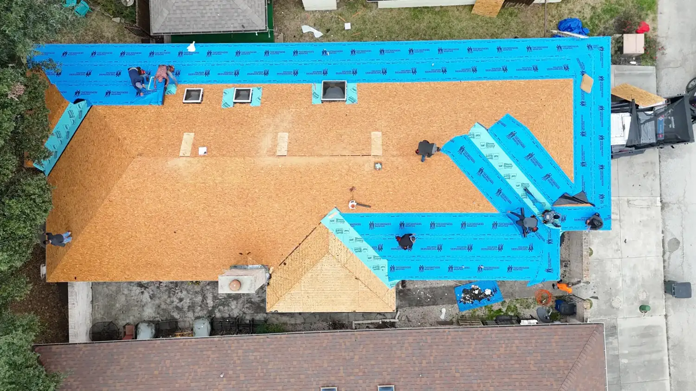
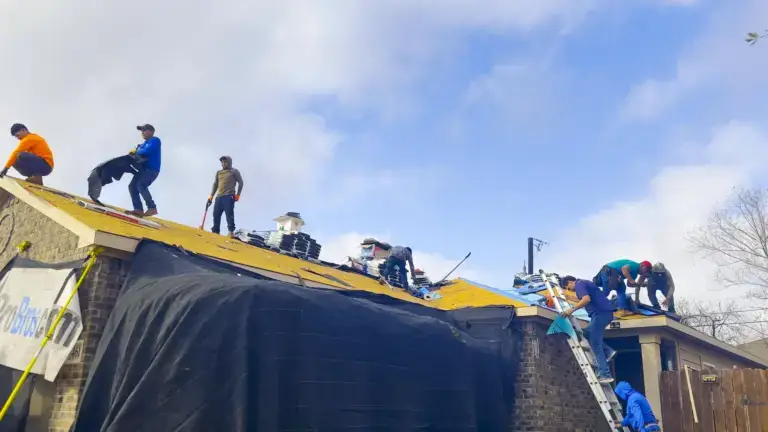
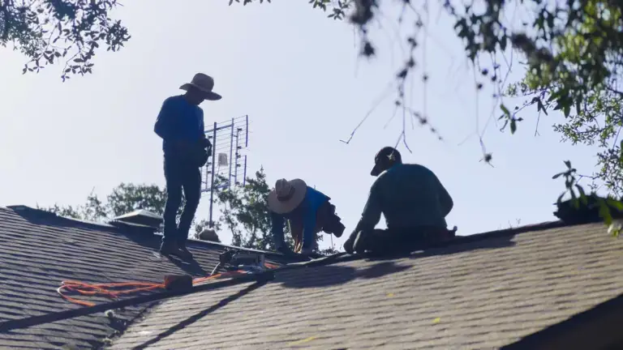
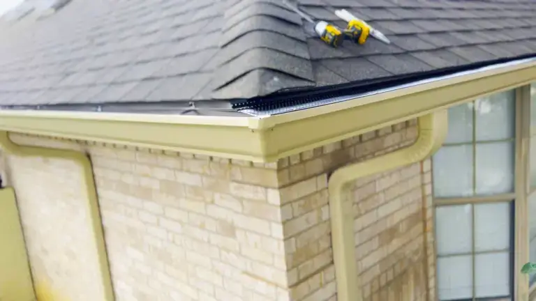
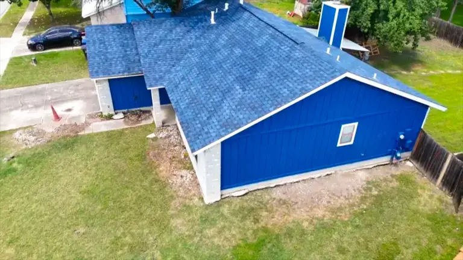
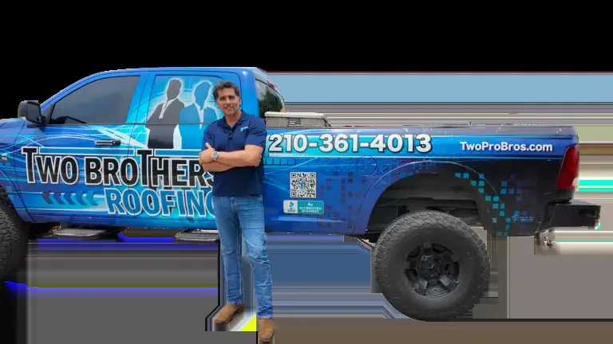
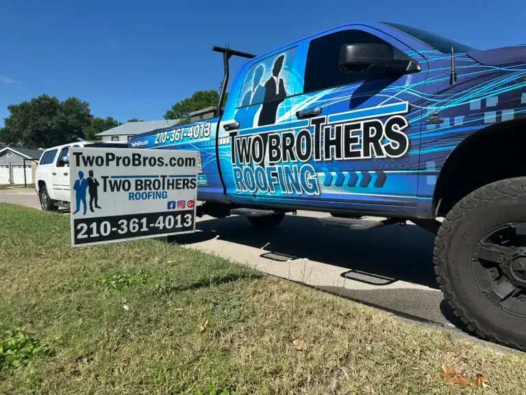
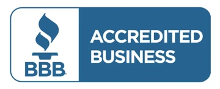

Your San Antonio roof, priced in 30 seconds.
Roof replacement, repair, metal roofing, gutters and siding from a local roofing company serving San Antonio and South Texas. Skip the wait and get an instant roof quote online.

How the Two Brothers instant quote works
With Two Brothers Roofing in San Antonio, our Instant Quote Tool allows homeowners to skip the wait and get fast, accurate roofing estimates online using advanced technology, making it easier than ever to plan and protect their investment.
Enter your address
Simply type in your home address so our system can locate and analyze your roof.
Smart roof analysis
Our advanced technology evaluates your roof's size, pitch, materials, and condition using satellite data.
View instant pricing options
Within seconds, you'll receive detailed roofing replacement options with clear pricing to fit your needs and budget.
Choose your next step
Review your options and easily schedule an inspection or move forward with your roofing project.
Residential roofing, gutters and siding services in San Antonio
At Two Brothers Roofing in San Antonio, we're proud to offer everything from roof replacements and repairs to emergency tarping, gutters, siding, and insurance claim support, but what truly sets us apart is how we serve you.

Roof replacement
Professional roof replacement using high-quality materials to protect your home and increase its value.
Learn more →
Roof repairs
Fast, reliable roof repairs that fix damage early and prevent costly issues down the road.
Learn more →
Seamless gutters
Seamless gutter installation designed to protect your home, foundation, and landscaping from water damage.
Learn more →
Siding installation
Expert siding installation that improves your home's curb appeal, energy efficiency, and overall protection.
Learn more →Why homeowners choose Two Brothers Roofing in San Antonio
Each project reflects our commitment to quality craftsmanship, attention to detail, and customer satisfaction.


Roof replacement and storm damage experts in San Antonio
When it comes to protecting your home, choosing the right roofing contractor makes all the difference. At Two Brothers Roofing, we proudly provide professional roof replacement, roof repair, gutter installation, and siding replacement services throughout San Antonio and the surrounding communities of New Braunfels, Schertz, Cibolo, Seguin, Canyon Lake, Bulverde, Spring Branch, Boerne, and Stone Oak.
South Texas weather can be unpredictable. From intense summer heat and damaging hail storms to high winds and heavy rainfall, your roof is constantly exposed to the elements. Even minor damage can quickly lead to leaks, water intrusion, mold growth, and costly structural repairs if left unaddressed.
That’s why our experienced team is committed to helping homeowners identify issues early and provide reliable solutions that protect their homes and investments. Whether your roof has reached the end of its lifespan or suffered storm-related damage, our roof replacement services are designed to deliver long-lasting protection using high-quality materials and expert craftsmanship.
We work with homeowners to select the best roofing system for their property while ensuring a smooth, hassle-free installation process. If your roof only requires repairs, our team can quickly address missing shingles, leaks, flashing damage, wind damage, and other common roofing issues before they become more expensive problems.
Fast response times and honest recommendations have helped make Two Brothers Roofing a trusted name throughout the San Antonio area. Hail and wind damage are among the most common causes of roofing problems in Texas. Many homeowners don’t realize their roof has been damaged until a leak appears months later.
Our comprehensive roof inspections help identify hidden storm damage, allowing repairs or replacements to be completed before additional damage occurs. We also assist homeowners throughout the insurance claims process. From documenting storm damage to meeting with insurance adjusters, our team helps ensure nothing is overlooked and that homeowners receive the information they need to make informed decisions about their property.
In addition to roofing, we provide professional gutter installation services designed to protect your home’s foundation, landscaping, and exterior from water damage. Properly functioning gutters help direct water away from your home, reducing the risk of erosion, foundation movement, and costly repairs.
Our siding replacement services help improve curb appeal, increase energy efficiency, and provide additional protection against moisture intrusion and severe weather. New siding can enhance the appearance of your home while helping lower energy costs and increasing overall property value.
As a BBB A+ Rated company with thousands of completed projects and insurance claims assisted, Two Brothers Roofing is committed to delivering exceptional customer service, quality workmanship, and honest communication. Whether you need roof repairs, a complete roof replacement, new gutters, or siding installation, we’re here to help protect your home throughout San Antonio and the Texas Hill Country.
Roofing for homes, businesses and communities.
Residential Services
At Two Brothers Roofing, we take pride in delivering dependable roofing solutions backed by honest service and quality craftsmanship. From roof repairs and full replacements to gutters, siding, and storm damage restoration, our team is committed to protecting your home and making the process simple, clear, and stress-free.
We combine the latest building technology with trusted materials to ensure long-lasting results, all while providing the kind of customer care that earns 5-star reviews. As a local company, we value our community and go the extra mile on every project—because your home is one of your biggest investments.
Commercial Properties
At Two Brothers Roofing, we provide dependable commercial roofing services for businesses across San Antonio and the surrounding areas. From minor repairs to full roof replacements, our team understands the importance of keeping your property protected, your operations running smoothly, and your investment secure.
We work efficiently to minimize disruptions while delivering high-quality results you can rely on. Our experienced crew uses durable materials and proven installation methods designed to withstand Texas weather conditions. With honest, upfront pricing and clear communication throughout the process, we make commercial roofing simple, cost-effective, and stress-free for property owners and managers.
Real Estate Developers
At Two Brothers Roofing, we proudly work with real estate investors across San Antonio and the surrounding areas, providing reliable roofing solutions that keep projects on schedule and within budget. Whether it’s a quick repair, full roof replacement, or storm damage restoration, we understand the importance of speed, quality, and cost-efficiency when managing investment properties.
Our team is experienced in working with fix-and-flip properties, rental portfolios, and multi-property projects, delivering consistent results you can count on. From fast inspections to detailed estimates and clean, professional installations, we help investors protect their assets and maximize property value with roofing done right.
Property Management
At Two Brothers Roofing, we understand the unique needs of property management companies and multi-property owners. From routine maintenance to emergency repairs, our team provides reliable, responsive service to keep your properties protected and your tenants satisfied.
We work closely with property managers to ensure clear communication, timely service, and minimal disruption to residents. Our experienced team handles everything from roof repairs and replacements to gutters, siding, and storm damage restoration. With fast turnaround times, honest pricing, and consistent 5-star service, Two Brothers Roofing is a trusted partner for protecting and maintaining the value of your properties across San Antonio and surrounding areas.
Government Buildings
Two Brothers Roofing proudly provides roofing services for government buildings throughout San Antonio and surrounding areas. We understand the importance of meeting strict standards, timelines, and safety requirements while delivering reliable, long-lasting roofing solutions for public facilities.
Our experienced team is equipped to handle everything from repairs and maintenance to full roof replacements on municipal and government properties. With a focus on quality workmanship, clear communication, and dependable service, we ensure every project is completed efficiently and to the highest standards.
Nonprofit Organizations
At Two Brothers Roofing, giving back to the community is a core part of who we are. We proudly support local nonprofit organizations by helping families and individuals in need with essential roofing services, ensuring they have a safe and secure place to call home.
Through partnerships, community outreach, and special initiatives, we strive to make a positive impact beyond just roofing. Whether it’s donating time, resources, or services, our mission is to strengthen the communities we serve and support those who need it most.
Book an appointment with Two Brothers Roofing
Let's inspect your roof and give you clarity. Watch how we work, then book a free inspection.
Built on trust, measured by performance

San Antonio and South Texas
Frequently asked questions
What services does Two Brothers Roofing offer?
Do you offer free roof inspections and estimates?
How does your instant roofing quote work?
How fast can you complete a roofing project?
Do you help with insurance claims for storm damage?
What makes Two Brothers Roofing different from other companies?
Do you clean up after the job is complete?
Can you help with storm or hail damage repairs?
Do you use high-quality roofing materials?
How do I get started with Two Brothers Roofing?
Get an instant roofing quote in 30 seconds or less
Two Brothers Roofing delivers durable, professional roofing solutions built to withstand anything.